Mẹo siêu hay của lệnh fg: khi Ctrl+Z lưu lại phiên terminal của bạn
Đăng ngày 18 April 2026
- Vấn đề: một terminal đang bận
- Ba lệnh không thể thiếu
- Kịch bản 1: Quá trình build lâu
- Kịch bản 2: Trình soạn thảo bị lãng quên
- Kịch bản 3: Tiến trình opencode bị tạm dừng
- Kịch bản 4: Quản lý đồng thời nhiều công việc
- Sự khác biệt giữa fg, bg, Ctrl+Z, Ctrl+C và &
- Vòng đời đầy đủ của một job
- Mẹo nâng cao
- Cạm bẫy và các lỗi thường gặp
- Sơ đồ tóm tắt
- Tại sao fg bị đánh giá thấp
- Bản ghi nhớ kỹ thuật: các tín hiệu
- Kết luận
- Tài liệu tham khảo
Bạn khởi chạy`./gradlew build`, terminal bị treo trong 3 phút, và bạn cần làm việc khác trong lúc chờ? Không cần mở tab mới.`Ctrl+Z`tạm dừng quy trình,`fg`đưa nó trở lại đúng nơi bạn đã để nó lại. Đây là mẹo Unix bị đánh giá thấp nhất trong công việc thường ngày của một lập trình viên.
Vấn đề: một terminal đang bận
Mọi lập trình viên đều đã từng gặp tình huống này:
$ ./gradlew build
> Building...Terminal bị treo. Bạn không thể nhập bất kỳ lệnh nào nữa. Và bạn cần xem một tệp, khởi chạy một`git status`, hoặc kiểm tra một cổng đang bận.
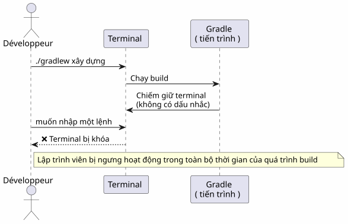
Hầu hết các nhà phát triển đều mở một terminal mới. Nhưng có một giải pháp thanh lịch hơn, nhanh hơn và native: quản lý job.
Ba lệnh không thể thiếu
Ctrl+Z — Tạm dừng (SIGTSTP)
`Ctrl+Z`gửi tín hiệu`SIGTSTP`đến tiến trình ở tiền cảnh. Tiến trình làbị treo— không bị giết — và terminal lấy lại dấu nhắc của nó.
$ ./gradlew build
> Building...
^Z
[1]+ Stoppé ./gradlew build
$Số trong ngoặc vuông`[1]`làsố công việc. Le `+`cho biết job mặc định.
fg — Tiếp tục ở tiền cảnh
`fg`đưa công việc bị tạm dừng trở lại tiền cảnh. Tiến trình tiếp tục chính xác từ nơi nó đã dừng lại.
$ fg
./gradlew build
> Building... (reprend où il en était)Với một số hiệu công việc cụ thể:
$ fg %2bg — Tiếp tục trong nền
`bg`tiếp tục quá trình mà không chặn terminal. Lý tưởng cho các bản build dài.
$ bg
[1]+ ./gradlew build &
$Le `&`ở cuối có nghĩa là tiến trình chạy ở chế độ nền.
jobs — Liệt kê các job của shell
$ jobs
[1]- Stoppé vim README.md
[2]+ En cours ./gradlew build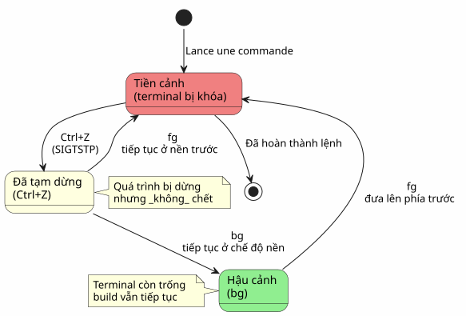
Kịch bản 1: Quá trình build lâu
Đây là trường hợp sử dụng phổ biến nhất. Bạn khởi chạy một bản dựng Gradle, terminal bị chặn, và bạn cần làm việc khác.
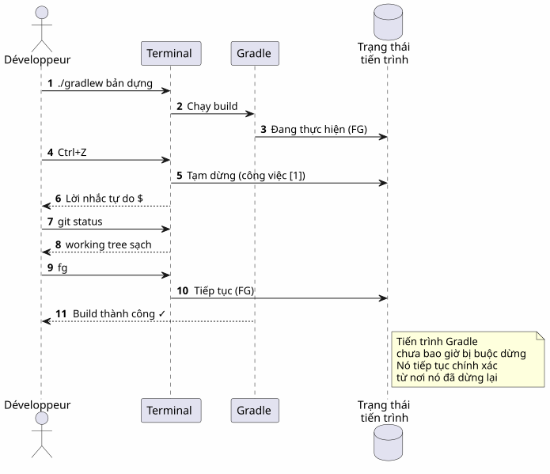
Từng bước một
$ ./gradlew build
> Building...
^Z
[1]+ Stoppé ./gradlew build
$ git status
On branch main
nothing to commit, working tree clean
$ fg
./gradlew build
> Building...
BUILD SUCCESSFUL in 2m 34sKịch bản 2: Trình soạn thảo bị lãng quên
Bạn đang ở trong`vim`, bạn cần xem một tệp khác mà không rời khỏi`vim`.
# Dans vim, en mode commande :
:shell
$ cat /path/to/other/file.txt
$ exit
# Retour dans vimNhưng nó nặng nề. Với`Ctrl+Z`, thật tức thì:
# Dans vim, n'importe quel moment :
Ctrl+Z
[1]+ Stoppé vim README.md
$ cat /path/to/other/file.txt
# ... lire le fichier ...
$ fg
vim README.md
# Retour exact là où on en était, curseur en place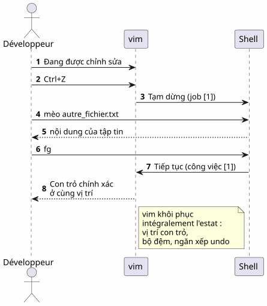
No source text was provided to translate. Please send the French text you’d like translated into Vietnamese.vim`khôi phục hoàn hảo trạng thái của nó sau một`fg: vị trí con trỏ, nội dung bộ đệm, lịch sử hoàn tác — mọi thứ đều được giữ nguyên.
Kịch bản 3: Tiến trình opencode bị tạm dừng
Đây là kịch bản đã thúc đẩy bài viết này. Bạn đang sử dụng`opencode`(công cụ CLI để điều khiển một LLM trên mã của bạn), và tiến trình bị tạm dừng.
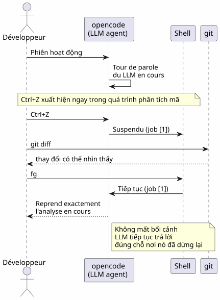
$ opencode
# ... session en cours, LLM analyse le code ...
^Z
[1]+ Stoppé opencode
$ git diff HEAD~1
# vérifier les changements récents
$ fg
opencode
# Le LLM reprend là où il s'était arrêtéLợi ích là gấp đôi:
-
Không mất ngữ cảnh: phiên LLM, lịch sử trò chuyện, các tệp đang mở — mọi thứ đều được giữ nguyên
-
Không khởi động lại: không cần khởi động lại opencode, tải lại ngữ cảnh, giải thích lại vấn đề cho LLM
Kịch bản 4: Quản lý đồng thời nhiều công việc
fg et `bg`chấp nhận một số job để nhắm mục tiêu một tiến trình cụ thể khi nhiều tiến trình bị tạm dừng.
$ vim config.yml
^Z
[1]+ Stoppé vim config.yml
$ ./gradlew test
^Z
[2]+ Stoppé ./gradlew test
$ htop
^Z
[3]+ Stoppé htop
$ jobs
[1] Stoppé vim config.yml
[2]- Stoppé ./gradlew test
[3]+ Stoppé htop
$ fg %2
./gradlew test
# Le build reprend en avant-plan
$ bg %3
[3] htop &
# htop reprend en arrière-plan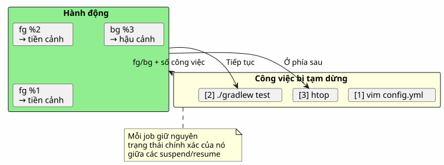
Tóm tắt các lệnh job
| Đơn hàng | Hiệu ứng | Ví dụ |
|---|---|---|
|
Tạm dừng tiến trình ở tiền cảnh |
Gửi`SIGTSTP` |
|
Tiếp tục tác vụ mặc định ở tiền cảnh |
|
|
Tiếp tục job n ở tiền cảnh |
|
|
Tiếp tục công việc mặc định trong nền |
|
|
Tiếp tục job n trong nền |
|
|
Liệt kê các job của shell hiện tại |
|
|
Hoàn thành job n |
|
Sự khác biệt giữa fg, bg, Ctrl+Z, Ctrl+C và &
Nhiều nhà phát triển nhầm lẫn các cơ chế này. Đây là một sự làm rõ mang tính quyết định.
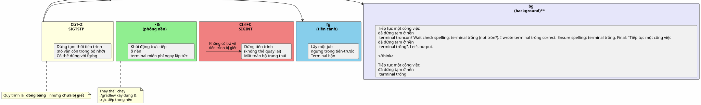
| Phím tắt/Lệnh | Tín hiệu | Hiệu ứng | Quay lại? |
|---|---|---|---|
|
|
Tạm dừng tiến trình (bị đóng băng, trong bộ nhớ) |
Vâng:`fg` ou |
|
|
Giết tiến trình (đã hoàn tất) |
Không: tiến trình bị hủy |
|
|
Giết tiến trình + core dump |
Không: tiến trình bị hủy |
|
— |
Khởi chạy trực tiếp trong nền |
`fg`để đưa nó trở lại tiền cảnh |
Ctrl+Z`làkhông phá hủy. Quá trình bị đóng băng nguyên trạng trong bộ nhớ. Bạn có thể tiếp tục ngay với`fg. Đây là một tạm dừng, không phải một dừng hẳn.
|
Vòng đời đầy đủ của một job
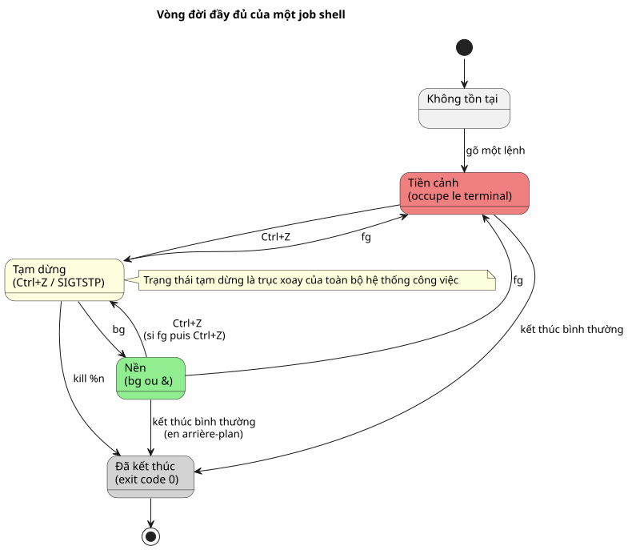
Mẹo nâng cao
fg với công việc gần đây nhất và chương trình vừa học vừa làm
fg`không có đối số thì trả về job đã được đánh dấu+(mới nhất). Nhưng bạn cũng có thể sử dụng%-`để nhắm đến job trước đó:
$ vim file1.txt
^Z
[1]+ Stoppé vim file1.txt
$ vim file2.txt
^Z
[2]+ Stoppé vim file2.txt
$ fg # ramène job [2] (le plus récent)
$ fg %- # ramène job [1] (le précédent)giết một job một cách sạch sẽ
$ jobs
[1]- Stoppé vim config.yml
[2]+ Stoppé ./gradlew test
$ kill %2 # envoie SIGTERM au job 2
$ kill -9 %1 # envoie SIGKILL au job 1 (force)désown: tách khỏi shell
disown`loại bỏ một job khỏi bảng job của shell. Tiến trình vẫn tiếp tục chạy nhưng không thể được đưa trở lại bằng`fg:
$ ./gradlew build &
[1] 12345
$ disown %1
# Le processus continue mais n'est plus lié au shell
# Ça survives à la fermeture du terminalKết hợp với nohup cho các tiến trình chạy lâu
Để một tiến trình tồn tại sau khi đóng terminal:
$ nohup ./gradlew build &
[1] 12345
$ disown %1
# Le build continue même si vous fermez le terminal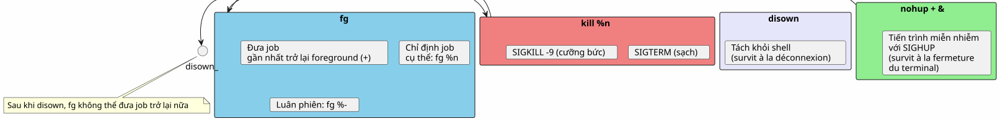
Cạm bẫy và các lỗi thường gặp
Nhầm lẫn Ctrl+Z với Ctrl+C
Đây là lỗi phổ biến nhất.`Ctrl+C`giết tiến trình.`Ctrl+Z`tạm dừng nó. Nếu bạn nhấn vào`Ctrl+C`Do phản xạ, toàn bộ trạng thái bị mất — các tệp đang mở, phiên LLM, các bản dựng đang diễn ra.
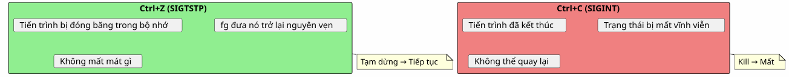
Các job là cục bộ trong shell
jobs, fg et `bg`chỉ hoạt động trong shell đã khởi chạy các tiến trình. Nếu bạn mở một terminal mới, bạn sẽ không thấy các job của terminal kia.
# Terminal 1
$ vim file.txt
^Z
[1]+ Stoppé vim file.txt
# Terminal 2 (nouveau)
$ jobs
# (rien — les jobs sont locaux au shell)Để xem các tiến trình toàn hệ thống, hãy sử dụng`ps` ou htop :
ps aux | grep vimCác job không tồn tại sau khi đóng shell
Nếu bạn đóng terminal, tất cả các job bị tạm dừng hoặc chạy nền đều sẽ bị hủy. Để một tiến trình tồn tại, hãy dùng`nohup`+disown :
$ nohup ./gradlew build &
[1] 12345
$ disown %1
# Fermer le terminal → le build continueCác tiến trình tương tác và fg
Một số chương trình tương tác không hoạt động tốt sau một`Ctrl+Z`It looks like the text to translate is missing — you’ve only sent the instructions and a "+" symbol. Please provide the French text you’d like me to translate into Vietnamese.fg. Điều đó hiếm nhưng vẫn xảy ra:
-
Một số chương trình sử dụng tín hiệu (vim, htop, less) xử lý tốt`Ctrl+Z`)
-
Các chương trình mạng chạy lâu (ssh, opencode) thường khôi phục đúng cách
-
Các chương trình thay đổi terminal (ncurses) đôi khi có thể khiến terminal rơi vào trạng thái không mong đợi
Trong trường hợp terminal bị hỏng sau một`fg`, nhập:
resetSơ đồ tóm tắt
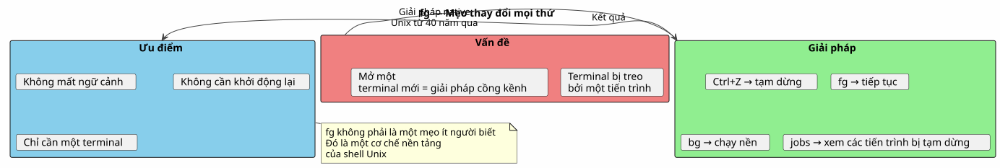
Tại sao fg bị đánh giá thấp
Hầu hết các nhà phát triển hiện đại khám phá ra`fg`muộn, thậm chí không bao giờ. Một vài lý do:
-
Các IDE ẩn terminal: VS Code cung cấp một terminal tích hợp, nhưng nhiều tab khiến`fg`có vẻ ít cần thiết hơn
-
Các công cụ đồ họa thay thế CLI: trình quản lý tệp, trình giám sát hệ thống, ứng dụng khách Git đồ họa
-
tmux và screen: các bộ ghép kênh này giải quyết cùng một vấn đề theo cách khác nhau, nhưng`fg`đơn giản hơn và luôn sẵn có
Tuy nhiên,`fg`là:
-
Phổ quát: có mặt trong tất cả các shell POSIX (bash, zsh, fish…)
-
Không phụ thuộc: không cần cài đặt tmux hoặc screen
-
Ảnh chụp nhanh: hai đòn tấn công (
Ctrl+Z`sau đó`fg) để tạm dừng và tiếp tục -
Người bảo tồn ngữ cảnh: trạng thái của tiến trình là nguyên vẹn
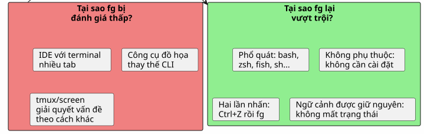
Bản ghi nhớ kỹ thuật: các tín hiệu
Dành cho những người tò mò, đây là các tín hiệu liên quan:
| Tín hiệu | Tên | Gửi bởi | Hiệu ứng |
|---|---|---|---|
2 |
|
|
Gián đoạn — kết thúc tiến trình |
3 |
|
|
Thoát với core dump |
18 |
|
|
Dừng tương tác — tạm dừng quy trình |
19 |
|
|
Tiếp tục — khôi phục một tiến trình bị tạm dừng |
15 |
|
|
Kết thúc sạch |
9 |
|
|
Chấm dứt cưỡng bức (không thể chặn) |
Luồng hoàn chỉnh:
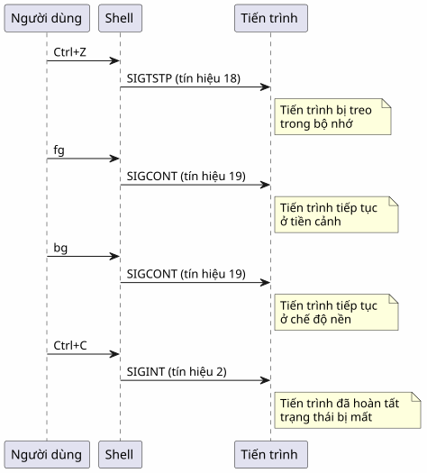
Kết luận
`fg`không phải là một mẹo ít người biết — đó là một cơ chế nền tảng của shell Unix, đã có từ những năm 70. Việc hầu hết lập trình viên không biết đến nó là một triệu chứng của thời đại chúng ta: các IDE và multiplexer đã khiến chúng ta xa rời những điều cơ bản.
Nhưng khi bạn đang ở trên một máy chủ SSH, trong một terminal tối giản, hoặc chỉ đơn giản là đang sử dụng`opencode`và rằng LLM đang làm việc —Ctrl+Z, fg, bg, `jobs`là những người bạn tốt nhất của bạn.
_ Ctrl+Z tạm dừng, fg tiếp tục. Đó là chức năng tạm dừng-phát của terminal. _
Tài liệu tham khảo
-
man bash— mục JOB CONTROL -
man signal— danh sách các tín hiệu POSIX